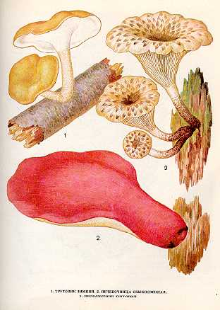

1. ТРУТОВИК ЗИМНИЙ
Встречается с весны до осенне-зимних морозов единичными экземплярами на сучках, погруженных в почву, а также на стволах, корнях и пнях ивы, березы, ольхи, рябины, орешника и других лиственных пород.
Шляпка эластичная, затем кожистая, выпуклая и
плоская, 1-
Ножка плотная, цилиндрическая, 2-
Малоизвестный съедобный гриб.
Употребляются молодые шляпки свежими, пригодны для сушки.
2. ПЕЧЕНОЧНИЦА ОБЫКНОВЕННАЯ.
Встречается довольно редко, обычно единичными
экземплярами. Растет на свежих дубовых пнях и на живых старых дубах, чаще всего
в дуплах и у основания стволов одиночно или сросшимися
по 2—3 со второй половины июля и до первых заморозков.
Внешний облик гриба
настолько характерен, что спутать его с каким-либо другим невозможно: плодовое
тело сидячее или снабжено короткой, обычно боковой ножкой, по внешнему виду
молодой гриб напоминает сырую печенку, от чего происходит, очевидно, его название. Шляпки желвакообразные, лопатчатые или языкообразно-вытянутые,
верхняя поверхность красновато-бурая, у молодых грибов мягкая, слегка студенистая,
клейкая, нижняя сторона трубчатая. Мякоть толстая, мясистая, у молодых сочная, пропитанная
кровяно-красным соком, на разрезе виден мраморный рисунок от радиально расположенных
прожилок, без особого вкуса и запаха. Трубочки с мелкими порами. Трубчатый слой
желтоватый, позднее буровато-рыжий. Споровый порошок бледно-ржаво-бурый. Споры яйцевидные,
гладкие.
Ножка короткая, толстая, плотная, буро-красная,
с пучком волокон у основания. Плодовые тела печеночницы
могут достигать 20—30 см в поперечнике и массы
Гриб съедобен, четвертой категории. В пищу употребляются только молодые
грибы в свежем и маринованном виде.
3. ПИЛОЛИСТНИК ТИГРОВЫЙ.
Селится на пнях или на валежной
древесине, преимущественно лиственных пород. Растет иногда большими группами. Плодоносит
в августе — сентябре. Шляпка до
Пластинки нисходящие по ножке, беловатые, кремовые, узкие, зазубренные.
Споровый порошок белый. Споры зерновидные или эллипсоидные.
Ножка до
Малоизвестный съедобный гриб. В пищу употребляются молодые грибы
в свежем виде.